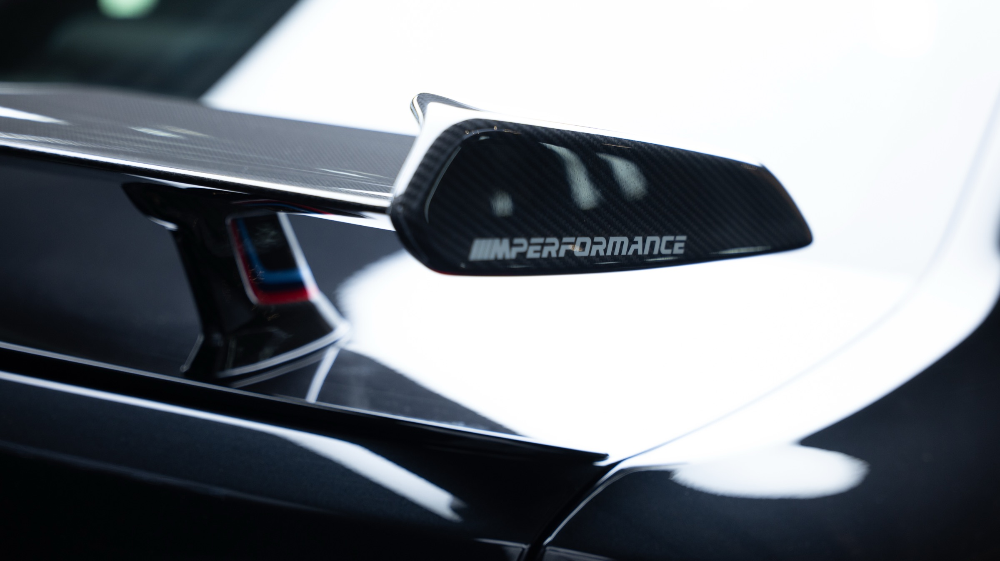
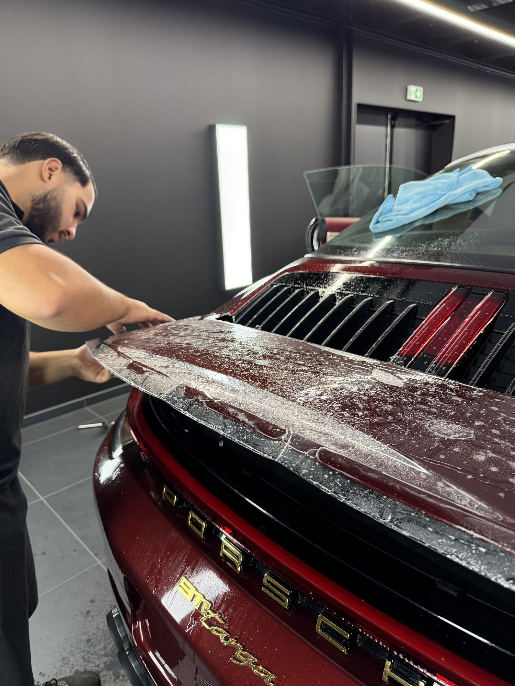
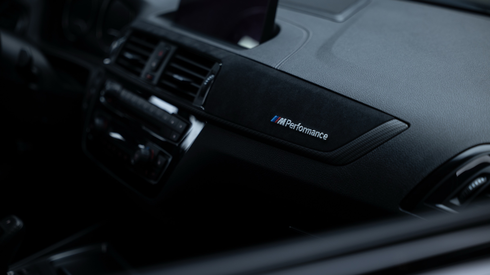
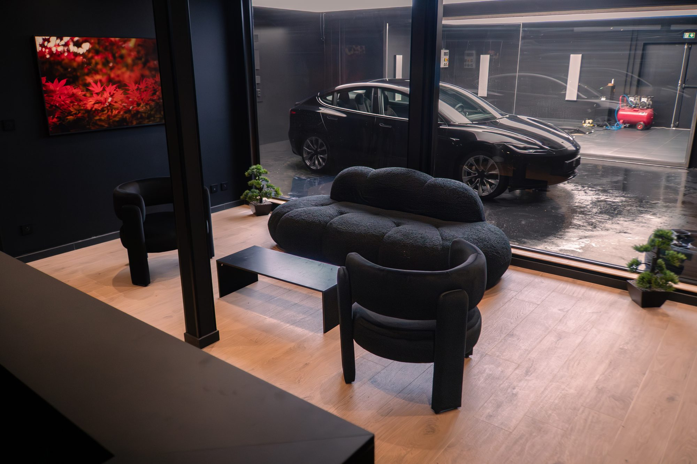
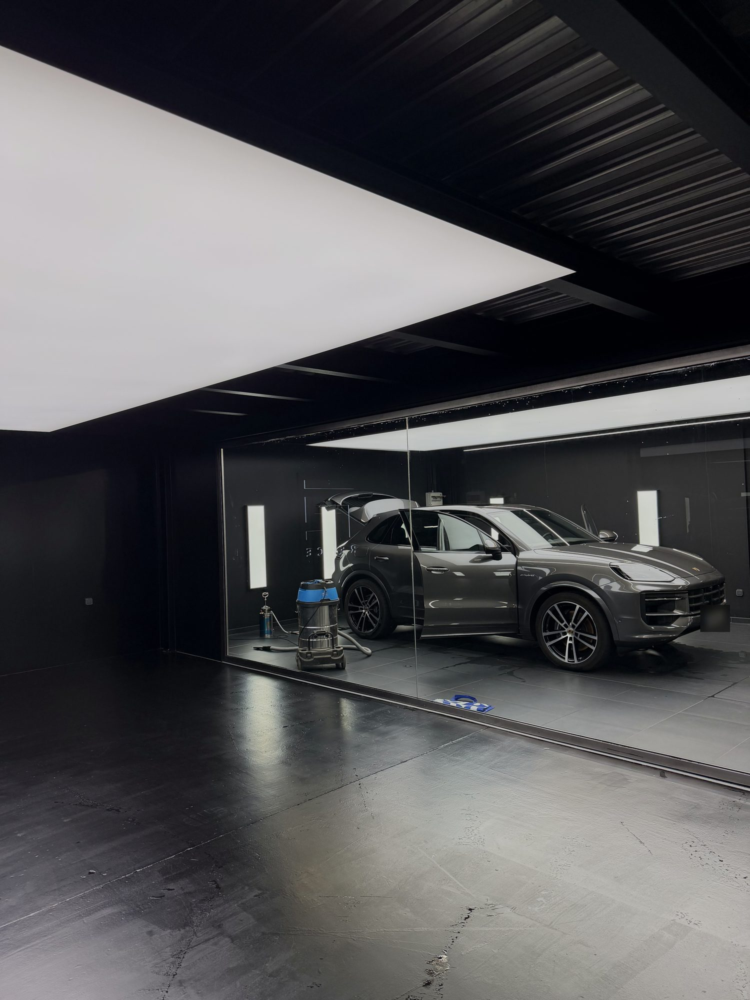
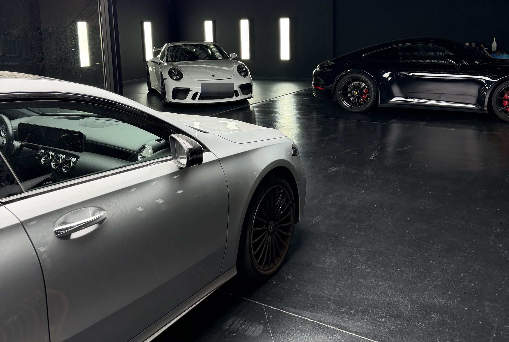

Polissage & céramique
Le polissage efface le voile, les micro-rayures et les hologrammes ; la céramique fige le résultat : brillance, effet déperlant et entretien facilité.
![REYCE]()
Atelier à Lyon · sur rendez-vous
Posé à la main · films STEK et FeynLab garantis jusqu’à 12 ans · devis sous 24 h
L'atelier lyonnais des véhicules d'exception. Protection PPF sous garantie fabricant, correction de peinture, céramique et soin intérieur, exécutés à la main. Sur rendez-vous.

Notre spécialité
Un film polyuréthane transparent appliqué sur la peinture d’origine. Il absorbe les impacts de gravillons, les frottements et les micro-rayures, sans modifier l’aspect du véhicule.
Nos autres soins

Le polissage efface le voile, les micro-rayures et les hologrammes ; la céramique fige le résultat : brillance, effet déperlant et entretien facilité.

Intérieur, extérieur ou complet, en trois formules. Le nettoyage se réserve directement en ligne.
Avis clients
Le déroulé
Six étapes, les mêmes pour chaque véhicule.
On lit votre voiture avant de la toucher.
On repart d’une surface parfaitement saine.

On efface le voile et les micro-rayures.
Céramique ou PPF, selon l’usage.
Rien ne sort sans notre aval.
Vous repartez au volant d’une voiture prête à rouler.
REYCE Car Spa
Un salon vitré donne sur l’atelier : vous suivez le travail en direct, un café à la main.


Espresso de torréfacteur.
Baquet et volant à retour de force.
Assises confortables, grand écran, wifi.
Questions fréquentes
Réservez en ligne ou écrivez-nous sur WhatsApp avec le modèle, l’année et l’état (neuf ou non) de votre véhicule : l’atelier vous répond du lundi au samedi, de 9 h à 19 h, et un devis détaillé suit sous 24 h.
Le PPF est une protection physique contre les impacts et les frottements. La céramique est une protection de surface qui apporte hydrophobie, brillance et entretien facilité, sans encaisser les impacts. Les deux sont complémentaires.
Cela dépend de la prestation : de 1 à 3 jours pour un polissage selon le niveau de correction, entre 3 et 6 jours pour un PPF selon la configuration (7 jours pour une voiture neuve, le temps des vérifications), une journée pour un nettoyage complet. La durée exacte est indiquée au devis.
Elle dépend du film posé. Le film STEK bénéficie d’une garantie fabricant jusqu’à 12 ans, sous conditions (installateur agréé, enregistrement sous 30 jours, entretien conforme) ; elle couvre les défauts de fabrication, pas les impacts de gravillons. Le film FeynLab bénéficie d’une garantie structurelle de 10 ans.
Oui, jusqu’à 50 km à vol d’oiseau autour de l’atelier de La Mulatière, et nous nous adaptons à votre situation ; au-delà, il est établi sur devis. Selon le véhicule, nous proposons un convoyage ou un transport privé.
Généralement oui. Une céramique ne masque pas les défauts : elle les fige. Un polissage préalable retire micro-rayures et voile de surface pour que la protection se pose sur une peinture nette.

Sublimez. Protégez. Roulez.
Choisissez une prestation ou décrivez votre projet. Réponse sous 24 h.